۰۱
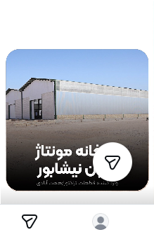
جلب توجه
کارخانه مونتاژ تراکتور ایرون
هدف: معرفی یک تغییر بزرگ و ایجاد کنجکاوی درباره اتفاقی که در راه است.
نتیجه واقعی: ♥ ۸.۱K پسند · 💬 ۵۵۸ دیدگاه
سناریونویس | استراتژیست محتوا
تبدیل مسئلههای واقعی کسبوکار به ایده، سناریو و محتوای قابل اجرا.
(اگه اومدی بگی «این پیج چندتا سناریو بده»، همین الان دیگه خوندن اینا برات اتلاف وقته.)
از نظر من صرفاً ساختن محتوای وایرال، رسالت تولید محتوای اصولی نیست.
قبل از اینکه به ایده یا سناریو برسم، سعی میکنم خودِ کسبوکار رو بفهمم؛ اینکه چه کسیه، تو چه بازاری فعالیت میکنه، مشتریهاش چطور تصمیم میگیرن، با چه رقبایی روبهروئه و چه ظرفیتی برای رشد و تمایز داره.
برای من مهمه بدونم چرا یک کسبوکار باید انتخاب بشه و چرا مشتری باید اونو به بقیه ترجیح بده؛ نه فقط اینکه چه چیزی میتونه توی اینستاگرام بیشتر دیده بشه.
خیلی وقتها صاحب کسبوکار برای این سؤال جوابهایی مثل «کیفیت کارمون خوبه»، «کارمون رو درست انجام میدیم» یا «سر قولمون هستیم» داره. اینها همیشه مزیت نیستن؛ اما بسته به بازار و چیزی که برای مشتری مهمه، ممکنه واقعاً تبدیل به دلیل انتخاب شدن بشن.
برای همین سعی میکنم بفهمم چه چیزی برای چه مشتریای ارزشمنده، چرا باعث انتخابش میشه و چطور میشه اون رو به یک پیام قابلفهم تبدیل کرد.
بعد از این مرحلهست که سناریو و محتوا وارد ماجرا میشن.
خداروشکر فرصت همکاری با برندهای مختلف توی کتگوریهای مختلف و داشتم؛ از شرکت ساختمونی و مجتمع تفریحی و رستوران گرفته تا شرکتهای خدماتی، طلافروشی و...
همین تنوع مشتریها باعث شده با پرسوناها، لحنها و مسئلههای متفاوتی روبهرو بشم و از کار کردن با یه فرمول ثابت فاصله بگیرم.
کیاکو
گروه ساختمانی بهشت
هلدینگ ستاره سپهر
شورومهای بارمان
فروشگاه طلا و جواهر — طلا و زمان
کلینیک دندانپزشکی دکتر زرین
کلینیک زیبایی روشا
مجموعه سوارکاری و پرورش اسب گلدن هورس
مجموعه خدمات خودرو مولوی
مجتمع مهدوی مال
رستوران سنتی تاجمحل
نمونهای از اینکه چطور تغییر مسیر یک کسبوکار، به تغییر مسیر محتوا و سپس طراحی یک مسیر برای شناخت، اعتماد، بررسی و اقدام مخاطب تبدیل شد.
آقای همتآبادی کسبوکارش رو تقویت کرده بود، ولی غفلت از تولید محتوای مناسب باعث شده بود بین چیزی که واقعاً هست و چیزی که مخاطب میبینه فاصله ایجاد بشه.
وقتی وارد پروژه شدم، پیج بیشتر شبیه یک فروشگاه قطعات تراکتور بود؛ در حالی که مجموعه وارد مرحله واردات و مونتاژ تراکتور آیرون شده بود. شکاف اصلی فقط کمبود محتوا نبود؛ تصویری که مخاطب از مجموعه داشت با چیزی که واقعاً بود فاصله داشت.
از یک فروشنده قطعه به مجموعهای که سالها در این حوزه فعالیت کرده، واردکننده و مونتاژکننده است و میتواند یک گزینه جدی برای خرید تراکتور باشد.
وقتی تولید محتوای این پیج بهم پیشنهاد شد، وضعیت پیج بیشتر شبیه یه فروشگاه لوازم یدکی و قطعات تراکتور بود با حدود ۷–۸ هزار نفر فالوور.
بیشتر محتواها درباره معرفی قطعات و نگهداری از قطعه بود و کنارش محتواهای پراکنده و حتی فان هم منتشر میشد؛ محتوایی که باعث میشد پیج خیلی جدی گرفته نشه.
این در حالی بود که کسبوکار کمکم وارد یه مرحله جدید شده بود؛ یعنی واردات و مونتاژ تراکتور آیرون.
کسی بهعنوان متخصص به همتآبادی نگاه نمیکرد و خیلیها نمیدونستن پدر و پسر همتآبادی حدود ۳۵ سال سابقه فعالیت و پشتیبانی از قطعات دارن و نزدیک به ۱۰ ساله که در زمینه واردات قطعه فعالیت میکنن.
این شکافی بود که بین برند و مخاطبش وجود داشت و باید پر میشد؛ چون خرید یه قطعه با خرید تراکتور خیلی فرق داره و مخاطب وارد مقایسه، سؤال و در نهایت مسئله اعتماد میشه.
برای همین باید تصویر پیج همزمان با تغییر کسبوکار تغییر میکرد؛ از یک فروشنده قطعه به مجموعهای که سالها در این حوزه فعالیت کرده، حالا واردکننده و مونتاژکننده تراکتوره، روی این بازار سرمایهگذاری کرده و میخواد سهم خودش رو از بازار بگیره.
«برای اولین بار در نیشابور؛ راهاندازی خط مونتاژ آیرون»
قبل از این ویدیو هم از محل پروژه و سولههای در حال ساخت محتوا گرفته شده بود، اما بیشتر به خاطر انتخاب تیتر و نحوه روایت، دیده نمیشد.
برای شروع، یک نمای کلی از سوله گذاشتم با هوک «برای اولین بار در نیشابور — فیروزه». بعد کمکم راهاندازی خط مونتاژ آیرون، تصاویر کارشناسان، بخشی از تراکتور و فضای پروژه رو مرحلهبهمرحله نشون دادم.
نمیخواستم از همون اول همهچیز رو لو بدیم؛ مخاطب باید میموند تا کمکم بفهمه این «اولین» دقیقاً مربوط به چیه.
هدف: دادن اولین پالس به مخاطب که یه اتفاق بزرگ در راهه و ایجاد تصویری از تغییر مقیاس کسبوکار.
بعد از اینکه مخاطب متوجه شد اتفاق جدیدی در مجموعه افتاده، باید میفهمید آیرون چیه و چرا باید اخبارش رو دنبال کنه. با «یک تحول بزرگ در نیشابور» دوباره توجه گرفتیم و بعد سراغ محتواهایی مثل «معجزات آیرون»، «غول تراکتور ایران» و «صدای نرم تراکتور» رفتیم.
بعد از معرفی آیرون، سؤالهای مهمتری برای مخاطب شکل میگرفت: اعتماد، خدمات پس از فروش، تأمین قطعات، انتخاب مدل مناسب و دلیل خرید.
برای همین درباره خدمات پس از فروش، تأمین قطعات، مزایا و امکانات تراکتورها صحبت کردیم و سعی کردیم هر بار بخشی از تردید مخاطب رو کم کنیم.
مخاطب دیگه فقط نمیخواست بشنوه که آیرون خوبه؛ میخواست ببینه واقعاً چطور کار میکنه. برای همین رسیدیم به محتواهایی از تراکتور در حین کار و در شرایط واقعی؛ از عملکرد در اقلیمهای مختلف تا امکانات و ویژگیهایی که برای کشاورز مهمه.
یکی از دغدغههای مخاطب این بود که آیرون یه برند تازهوارد به ایرانه. برای جواب دادن به این دغدغه، از سابقه خود برند استفاده کردیم: «آیرون در ۳۰ کشور دنیا».
هدف این بود که یک مانع ذهنی برای خرید رو کم کنیم: چیزی که قرار است بخری، یک محصول تازه و امتحاننشده نیست.
دعوت به اقدامها هم یک شکل ثابت نداشتن. بسته به موضوع محتوا، از مخاطب میخواستیم برای دریافت اطلاعات آیرون، مشاوره برای انتخاب مدل مناسب زمین، دریافت اطلاعات بیشتر یا عضویت در تلگرام اقدام کنه.
این دعوتها در کپشن، دایرکت یا انتهای خود ویدیو قرار میگرفتن.
در دورهای که من روی استراتژی و محتوای پیج کار میکردم، تعداد فالوورها از حدود ۷–۸ هزار نفر به حدود ۲۰ هزار نفر رسید. در مقاطعی با حدود ۱۳ هزار فالوور، استوریها تا حدود ۸ هزار بازدید میگرفتن و چندین محتوا هم به بازدیدهای دهها و صدها هزار نفری رسیدن.
از طریق دعوتهای مختلف، مخاطب برای دریافت اطلاعات و مشاوره جذب شد و چند هزار شماره تماس معتبر هم در فرآیند جمعآوری اطلاعات ثبت شد.
مخاطبی که در این بازه جذب شد، تا حد زیادی از جامعه هدف واقعی حوزه تراکتور بود و پیجهای معتبر این حوزه هم شروع به تعامل با صفحه کردند.
همکاری ما بعد از جنگ ۱۲ روزه تموم شد و من تا انتهای مسیر پروژه حضور نداشتم؛ بنابراین نتایج نهایی کسبوکار رو به این دوره نسبت نمیدم.
استراتژی محتوا، تحقیق و بررسی، سناریونویسی، کپشننویسی، تنظیم ترتیب محتوا، پاسخگویی و ارتباط با مخاطب و بخشی از تدوین.
اینها مجموعهای از ریلزهای مستقل نیستند؛ هر محتوا بخشی از مسیر شناخت، اعتماد، بررسی و اقدام مخاطب را کامل میکند.
ترتیب نمایش مطابق ترتیب انتشار دادههای پروژه است، نه میزان بازدید. ارزش این Case Study در مسیری است که محتواها کنار هم ساختهاند.
این یک منطق طراحی مسیر محتواست، نه قیف آماری قطعی؛ هر مخاطب الزاماً همهٔ این مراحل را طی نمیکند.

هدف: معرفی یک تغییر بزرگ و ایجاد کنجکاوی درباره اتفاقی که در راه است.
نتیجه واقعی: ♥ ۸.۱K پسند · 💬 ۵۵۸ دیدگاه
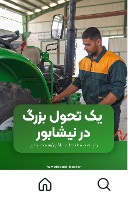
هدف: ادامه دادن توجه و نگه داشتن مخاطب در روایت تغییر مقیاس کسبوکار.
نتیجه واقعی: ♥ ۷K پسند · 💬 ۴۷۰ دیدگاه
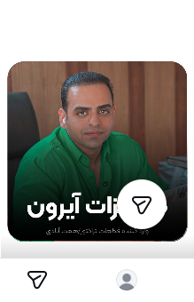
سؤال مخاطب: آیرون چیست و چرا باید ادامهٔ اخبارش را دنبال کنم؟
نتیجه واقعی: ♥ ۵۲۴ پسند · 💬 ۳۹ دیدگاه
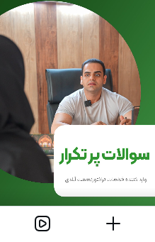
هدف: پاسخ دادن به پرسشهای مهمی که پیش از خرید شکل میگیرند.
نتیجه واقعی: ♥ ۱.۱K پسند · 💬 ۳۲۳۲ دیدگاه
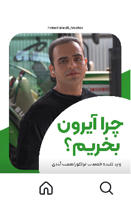
هدف: وارد کردن مخاطب به مقایسهٔ مزایا و دلیل انتخاب محصول.
نتیجه واقعی: ♥ ۶.۶K پسند · 💬 ۱۶۹۳ دیدگاه
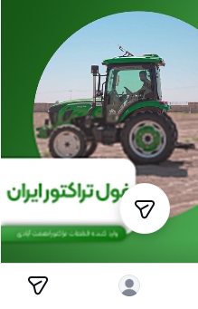
هدف: ساختن تصویر قویتر و متمایزتر از محصول.
نتیجه واقعی: ♥ ۸۲۹ پسند · 💬 ۲۷۸ دیدگاه
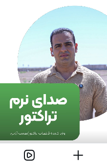
هدف: نشان دادن ویژگیای ملموس برای مخاطب و خریدار.
نتیجه واقعی: ♥ ۹۶۱ پسند · 💬 ۱۵۱ دیدگاه
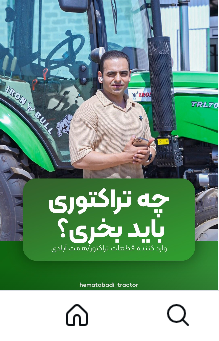
هدف: نزدیک کردن مخاطب به سؤالهای قبل از خرید و انتخاب مدل مناسب.
نتیجه واقعی: ♥ ۱.۱K پسند · 💬 ۱۶۹ دیدگاه
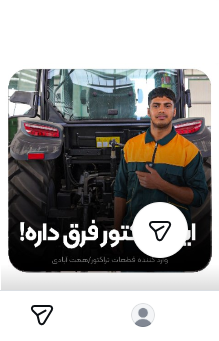
هدف: برجسته کردن تفاوتها و ادامه دادن بررسی ویژگیهای محصول.
نتیجه واقعی: ♥ ۲.۳K پسند · 💬 ۲۰۰۳ دیدگاه
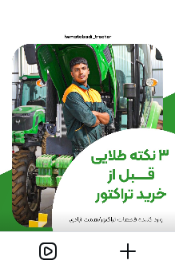
هدف: پاسخ دادن به نکات مهم و دغدغههای تصمیم خرید.
نتیجه واقعی: ♥ ۷۱۷ پسند · 💬 ۱۵۰ دیدگاه
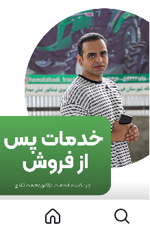
هدف: پاسخ به نگرانی تأمین قطعات و خدمات پس از خرید.
نتیجه واقعی: ♥ ۵۱۳ پسند · 💬 ۴۴ دیدگاه
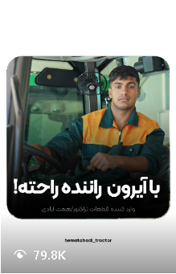
هدف: نزدیک کردن مخاطب به دریافت اطلاعات و برداشتن قدم بعدی.
نتیجه واقعی: ♥ ۳.۱K پسند · 💬 ۶۴۹ دیدگاه
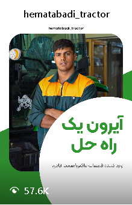
هدف: تکمیل روایت و آمادهسازی مخاطب برای اطلاعات مهم بعدی.
نتیجه واقعی: ♥ ۱.۹K پسند · 💬 ۱۳۹۳ دیدگاه
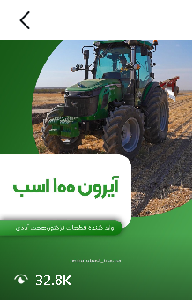
هدف: عبور از معرفی و آماده کردن مخاطب برای دیدن عملکرد واقعی.
نتیجه واقعی: ♥ ۷۲۲ پسند · 💬 ۳۸ دیدگاه
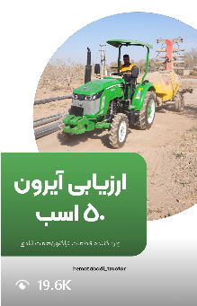
هدف: معرفی یک مدل و کمک به بررسی مشخصات محصول.
نتیجه واقعی: ♥ ۵۵۳ پسند · 💬 ۱۱۰ دیدگاه
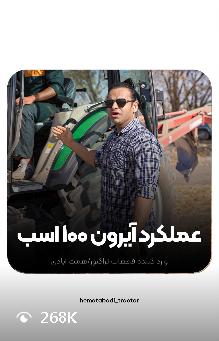
هدف: نشان دادن عملکرد واقعی تراکتور و تبدیل ادعا به تجربهٔ قابل مشاهده.
نتیجه واقعی: ♥ ۸.۵K پسند · 💬 ۱۷۸۸ دیدگاه
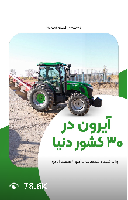
هدف: استفاده از سابقهٔ برند برای کم کردن نگرانی دربارهٔ تازهوارد بودن محصول.
نتیجه واقعی: ♥ ۳K پسند · 💬 ۱۶۵۸ دیدگاه
استراتژی محتوا، تحقیق و بررسی، سناریونویسی، کپشننویسی، تنظیم ترتیب محتوا، پاسخگویی و ارتباط با مخاطب و بخشی از تدوین.
خدمات خودرو مولوی — سناریونویسی و استراتژی محتوا
گلدن هورس — سناریونویسی و تولید محتوا
نجوا — پروژه شخصی و دغدغهمحور
تیزر فیلم جشنواره — تدوین و اجرای تصویری
شناخت کسبوکار، شناخت مخاطب، بررسی بازار، پیدا کردن مسئله، تعیین مسیر محتوا، ایدهپردازی، ساخت قلاب، سناریونویسی، طراحی روایت، دعوت به اقدام، تنظیم ترتیب محتوا، کپشننویسی، کنترل کیفیت، بررسی واکنش مخاطب و همراهی با فرایند تولید.
در کنار اینها: تدوین، هوش مصنوعی، پرامپتنویسی و خودکارسازیهای مرتبط با محتوا.
من یه جوون علاقهمند به ادبیات و هنرم که بعد از دیدن یه دوره تدوین، با معرفی اقوامم به یه کارگردان نیشابوری که کارهای دغدغهمند تولید میکرد، وارد عرصه تدوین شدم.
بعدتر با تیم فلیک آشنا شدم و وارد فضای تولید محتوای تبلیغاتی شدم.
علاقه به ادبیات از قبل توی من بود، ولی تا قبل از ورود به تبلیغات، ارتباط مستقیمی با این حوزه نداشتم. وقتی وارد تیم فلیک شدم، به واسطه ارتباط با بخشهای مختلف، کمکم متوجه شدم بیشتر از چیزی که فکر میکردم با ایدهپردازی و نوشتن ارتباط دارم.
از طرفی خودم هم دوست داشتم بنویسم، برای همین سراغ دورههای سناریونویسی، برندینگ و دیجیتال مارکتینگ رفتم. هرچی بیشتر وارد این فضا شدم، بیشتر از عمیق شدن توی این بازی لذت بردم. زمین بازیای که در اختیارم گذاشته شد هم باعث شد کلی آزمون و خطا کنم و تجربههای مختلفی به دست بیارم.
نتیجهای که از ادامه دادن این مسیر گرفتم، کمکم علاقهام رو به یک دغدغه تبدیل کرد. خیلی از کسبوکارها هنوز نمیدونن چطور باید تولید محتوای درست و متناسب با خودشون داشته باشن، در حالی که این بازار هنوز ظرفیت زیادی برای کار کردن داره.
از طرفی، تواناییای که در این مسیر پیدا کردم و نتایجی که از کارهام گرفتم، به من این پالس رو داد که میتونم توی این بازار تفاوت ایجاد کنم.
میخوام از دانش و تجربهای که توی این مسیر به دست آوردم، برای ارضای جاهطلبیهام در چارچوب ارزشهام استفاده کنم.
برای همین، پروژههایی که پتانسیل رشد و انگیزه جاهطلبانه دارن، مخصوصاً پروژههایی که مدل همکاریشون میتونه به نتیجه واقعی کار گره بخوره، برام جذابترن.
در کنار اون، استودیوها و تیمهایی که دنبال کار اصولی هستن و میخوان برای محتواشون اهداف پایدار داشته باشن، جزو اولویتهای من برای همکاری هستن.